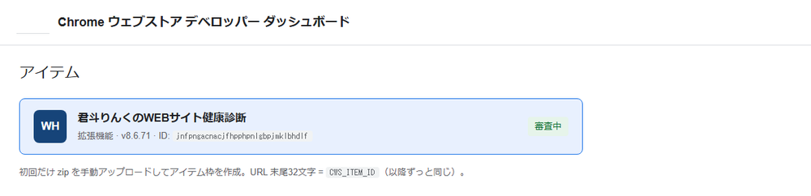
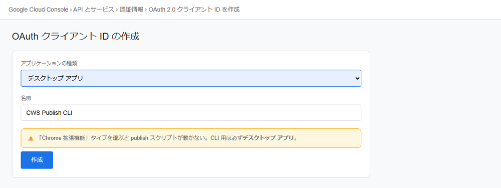
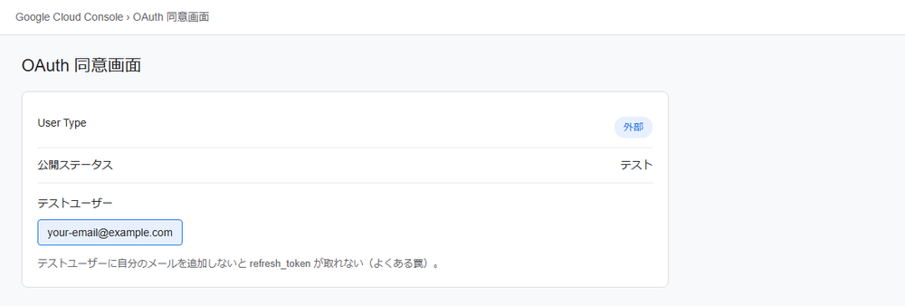
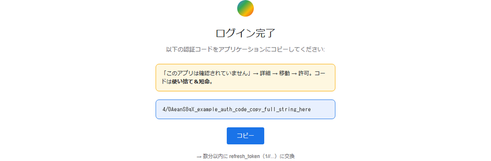
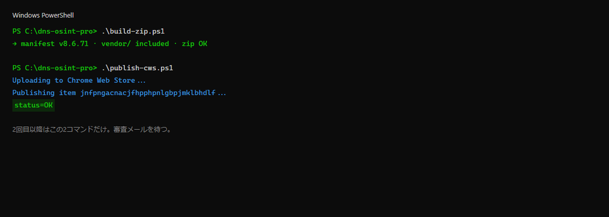

Chrome Web Store 追体験
― 人間がさわる画面は、これだけ ―
実際に拡張を申請したときの画面で、同じ手順をなぞれるよ。
初回 OAuth セットアップ（約15分）のあとは、ふだんの更新はコマンド2つで審査提出まで自動。
説明文や画像を直す日は、画面を自動でなぞる別ルート(下の⑥)に切り替えると速い。
① 初回アイテム② OAuth③ .env.cws④ 2コマンド⑥ 画像/説明の編集
0
2回目以降、人間が毎回やること 2コマンドだけ
.\build-zip.ps1
.\publish-cws.ps1
manifest の version bump → zip → アップロード → 審査提出。成功すると status=OK
1
ストアに「アイテム」を1本作る（初回だけ） 人間（10分）
- 初回だけ手動で zip をアップロードしてアイテム枠を作成（API では新規作成不可）
- ストア URL 末尾の 32文字 =
CWS_ITEM_ID（以降ずっと同じ） - 拡張リポは
app.config.jsonのchrome.enabled: falseなら別リポ（dns-osint 側）で管理するパターンもあり

📷 実画面: デベロッパーダッシュボード。アイテム ID（32文字）を
CWS_ITEM_ID に控える2
Google Cloud で OAuth 準備（初回だけ） 人間（15分）
- Google Cloud Console → Chrome Web Store API を有効化
- OAuth 同意画面 → User Type「外部」→ テストユーザーに自分のメールを追加（忘れるとトークン取れない）
- 認証情報 → OAuth クライアント → 種類は「デスクトップ アプリ」
⚠️ 罠①: 「Chrome 拡張機能」タイプを選ぶとスクリプトが動かない。CLI 用は必ずデスクトップ アプリ。

📷 実画面: Google Cloud › 認証情報 › OAuth クライアント。種類は「デスクトップ アプリ」

📷 実画面: OAuth 同意画面。User Type「外部」＋テストユーザーに自分のメールを追加
3
リフレッシュトークンを取得 人間（5分）
一番ハマりやすい。でも何度でも取り直せる
ブラウザで認可 URL を開く（CLIENT_ID を自分のものに置換）:
https://accounts.google.com/o/oauth2/auth?response_type=code&scope=https://www.googleapis.com/auth/chromewebstore&access_type=offline&prompt=consent&redirect_uri=urn:ietf:wg:oauth:2.0:oob&client_id=CLIENT_ID
- 「このアプリは確認されていません」→ 詳細 → 移動 → 許可
- 表示された認証コード（
4/0A...）を全文コピー → 数分以内にトークン交換 - 出てきた
refresh_token（1//...）を控える
⚠️ 罠②: コードは使い捨て＆短命。途中切れや例文コピーで
invalid_grant → 取り直せば OK。
📷 実画面: 認可後に表示される
4/0A... コード。全文コピーして数分以内に refresh_token に交換4
.env.cws を作る（初回だけ） 人間（2分）CWS_CLIENT_ID=... CWS_CLIENT_SECRET=... CWS_REFRESH_TOKEN=1//... CWS_ITEM_ID=...
🔒
.env.cws は .gitignore 必須。絶対にコミットしない。| 自動 | zip 作成・アップロード・審査提出 |
|---|---|
| 人間 | 初回アイテム作成・OAuth 4値・manifest bump |
| 審査 | Google 側（数時間〜数日）。合否は自動化外 |

📷 実画面:
build-zip.ps1 → publish-cws.ps1 成功時の status=OK5
却下されやすいポイント 確認
- 名前/説明/画像に「無料」「Free」「Premium」等 → 却下（事実表現「アカウント不要」は OK）
- zip に
vendor/（同梱ライブラリ）が入っているか毎回確認 - 実行時に外部 CDN を読む → リモートコード違反（MV3）。ライブラリは同梱
6
説明文や画像を直したいとき 別ルート
コードじゃなく「ストアの見た目」を直す日の道具
上の publish-cws(API) は 新しい zip を上げて審査に出すのが速い王道。
でも「説明文の言い回しを直す」「スクショを差し替える」みたいな
ストア掲載情報の編集は、ダッシュボード画面を直接さわる方が確実。
そこは画面を自動でなぞるスクリプトでまとめてやる:
GO=1 node scripts/cws-all-in-one.mjs
- 説明文の差し替え → スクショ5枚アップ → 下書き保存 → 審査送信 を1回で実行
- 初回に一度ログインした
.cws-profileを使うので OAuth 設定は不要 - PowerShell が使えない環境の zip 作成は
node build-zip.mjs（Git Bash + Node 版）
⚠️  たぬ姉メモ: 画面自動操作は Google が UI を変えると詰まりやすい。実際に
①スクショを別の画像枠（440×280 のプロモ枠）に入れて「画像サイズが不正」、
②送信ボタンが空振りでハマった。スクショは 1280×800 の枠だけに入れ、
送信ボタンは座標クリック、確認ダイアログはサイドバーのナビを除外して掴むのが効いた。
たぬ姉メモ: 画面自動操作は Google が UI を変えると詰まりやすい。実際に
①スクショを別の画像枠（440×280 のプロモ枠）に入れて「画像サイズが不正」、
②送信ボタンが空振りでハマった。スクショは 1280×800 の枠だけに入れ、
送信ボタンは座標クリック、確認ダイアログはサイドバーのナビを除外して掴むのが効いた。
たぬ姉メモ: 画面自動操作は Google が UI を変えると詰まりやすい。実際に
①スクショを別の画像枠（440×280 のプロモ枠）に入れて「画像サイズが不正」、
②送信ボタンが空振りでハマった。スクショは 1280×800 の枠だけに入れ、
送信ボタンは座標クリック、確認ダイアログはサイドバーのナビを除外して掴むのが効いた。
| 速い・無人で更新 | コード(zip)を上げて審査 → publish-cws(API) |
|---|---|
| 説明文・画像を直す | ダッシュボードを画面自動操作 → cws-all-in-one.mjs |